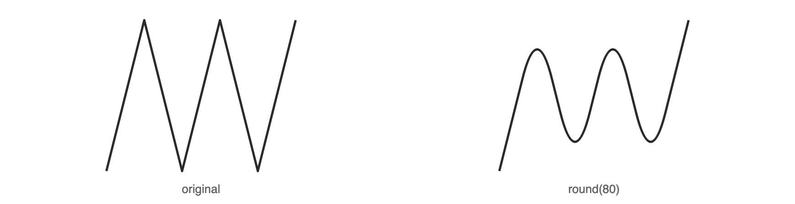
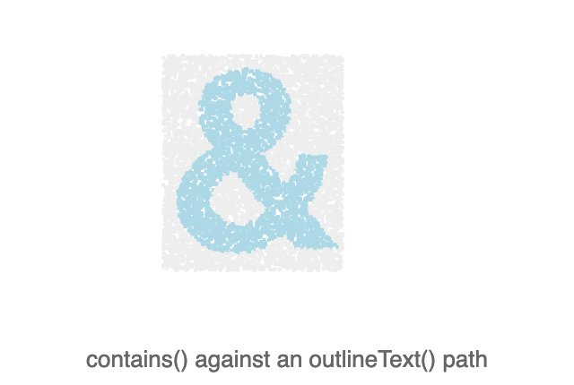
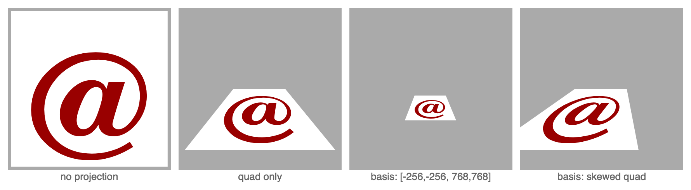
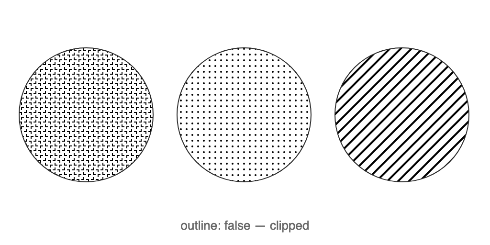

What it draws
Every image below was rendered by this library, beside the code that rendered it.

Corners rounded, curves trimmed
Boolean operations, round, trim, simplify, unwind, interpolate and point sampling, on any path.
let spikes = new Path2D();
spikes.moveTo(50, 225);
spikes.lineTo(100, 25);
spikes.lineTo(150, 225);
spikes.lineTo(200, 25);
spikes.lineTo(250, 225);
spikes.lineTo(300, 25);
let snake = spikes.round(80);
Text as geometry, not just ink
outlineText hands back a Path2D you can hit test, fill, or hand to any other path operation.
ctx.textBaseline = "top";
ctx.font = "bold 140px Helvetica";
let ampersand = ctx.outlineText("&");
for (let i = 0; i < 8000; i++) {
let x = Math.random() * 100,
y = Math.random() * 120;
ctx.fillStyle = ampersand.contains(x, y) ? "lightblue" : "#eee";
ctx.fillRect(x, y, 2, 2);
}
A quadrilateral, not just a matrix
createProjection maps the canvas onto four corners you name, so perspective is a transform like any other.
let matrix = ctx.createProjection(quad); // use default basis
ctx.setTransform(matrix);
ctx.fillStyle = "white";
ctx.fillRect(10, 10, w - 20, h - 20);
ctx.fillStyle = "#900";
ctx.fillText("@", w / 2, h - 40);
Every operator, including three the standard omits
The full globalCompositeOperation set, plus clear, destination and modulate, separated in the declared type so you know which half you are using.
let knockout = rect.complement(oval),
overlap = rect.intersect(oval),
union = rect.union(oval),
cutout = rect.difference(oval);
Pages are frames
150 pages on a Display P3 canvas, written as one AVIF at 60 fps. The four formats that carry a clock take the same call, and an animation read back reports its own frames and delays.
const canvas = new Canvas(640, 500, {
colorSpace: "display-p3",
gpu: true,
});
// ... one ctx.newPage() per frame ...
canvas.toFileSync("eye.avif", { fps: 60, loop: 0 });
Fills that are vectors, not tiles
createTexture fills with a path repeated on a grid you control — it scales with the transform, where a bitmap Pattern resamples.
let lines = new Path2D();
lines.moveTo(0, 0);
lines.lineTo(10, 10);
ctx.fillStyle = ctx.createTexture([10, 10], {
path: lines,
line: 2,
});